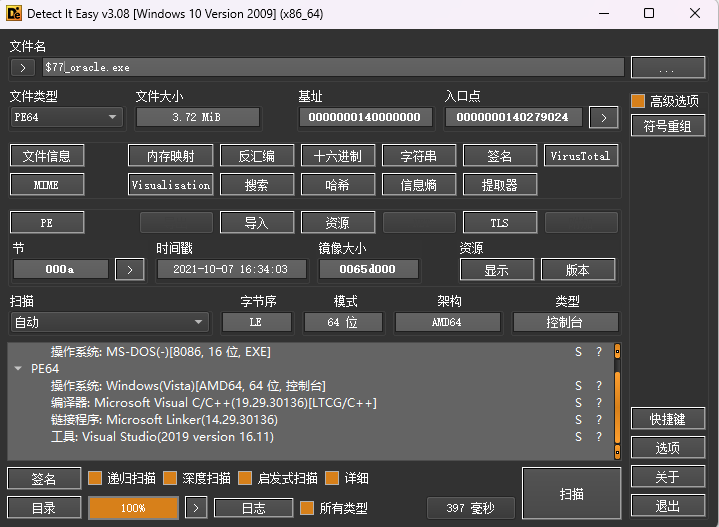
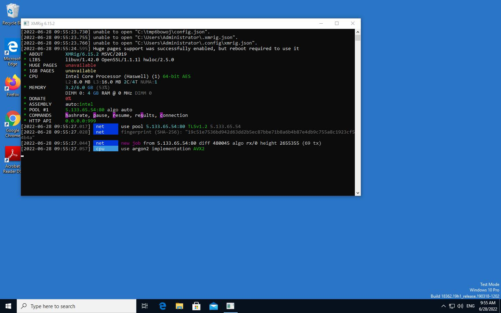
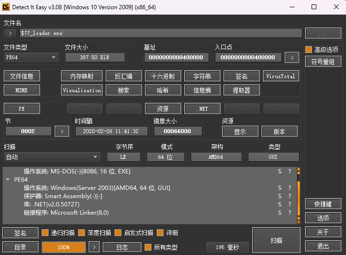
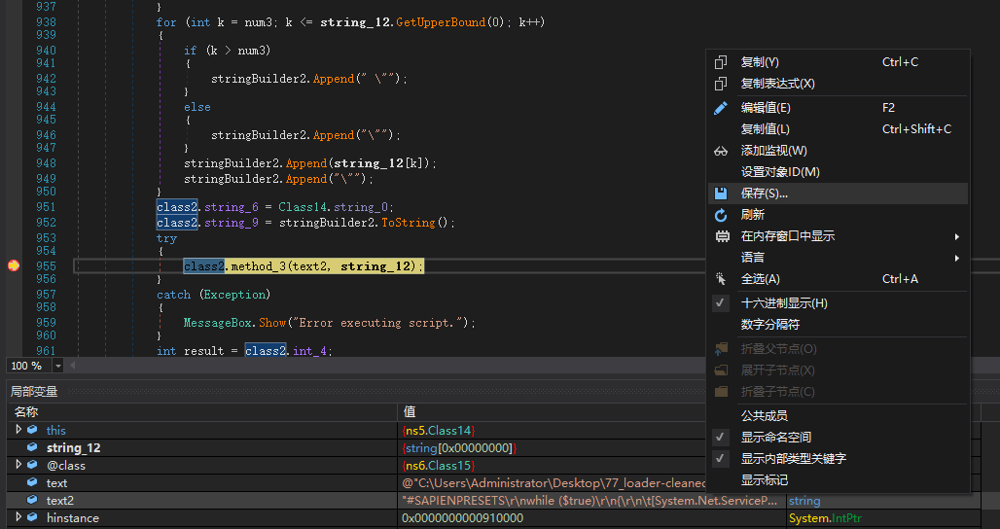
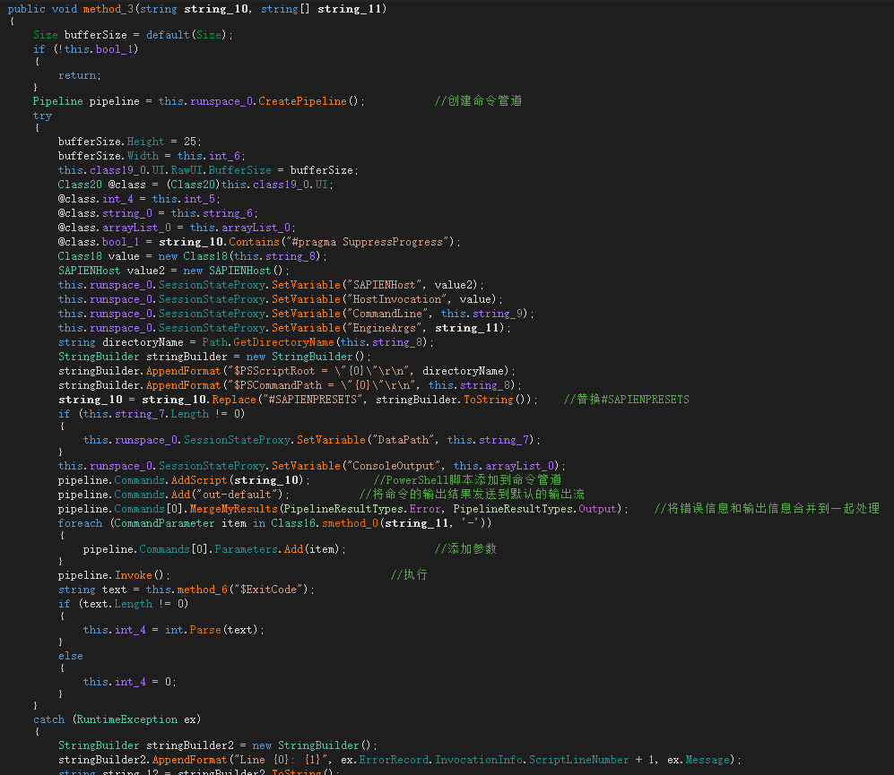

77oracle挖矿木马分析
$77_oracle.exe
样本基本信息

可以看出样本为64位PE文件，使用C++语言，编译器为VS2019。文件MD5：3b89f9f1e9932eee5a031b0266894f5f
样本分析
版本信息显示为 XMRig/6.15.2 MSVC/2019，矿池地址为5.133.65.54:80
原版XMRig https://github.com/xmrig/xmrig/releases
https://github.com/xmrig/xmrig/releases/download/v6.15.2/xmrig-6.15.2-msvc-win64.zip
左边为$77_oracle.exe，右边为xmrig.exe(xmrig-6.15.2-msvc-win64)。可以看出main函数基本一致，应该是由此版本修改编译得到的。
编译文档 https://xmrig.com/docs/miner/build/windows

内存中加载的config，矿池地址为5.133.65.54:80

$77_Loader.exe
样本基本信息

可以看出样本为64位PE文件，使用.net框架编译，存在Smart Assembly混淆。文件MD5：6F593DBEA0A8703AF52BD66F582251A4
样本分析
首先使用de4dot去混淆，再使用dnspy进行反编译，分析
主函数

剩下的懒得看了，就是加载资源解密，然后执行解密的powershell代码。

直接定位到 Error executing script.

在这里下断点就可以看见要执行的powershell了，可以选择保存进行分析。
执行powershell
unsapien提取打包的powershell脚本
可以看出是使用SAPIEN PowerShell Studio打包
提取powershell代码工具 https://github.com/dfir-it/unsapien
1 | |

奇安信攻防社区的一篇文章，也是通过sapien打包powershell脚本生成的可执行文件 https://forum.butian.net/share/2340
OracleLoader.ps1
1 | |
太长了随便看看了看，感觉与cspsvc.ps1相似，不上分析了，可以参见参考。